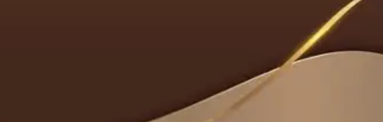
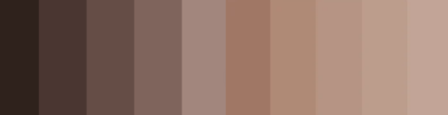
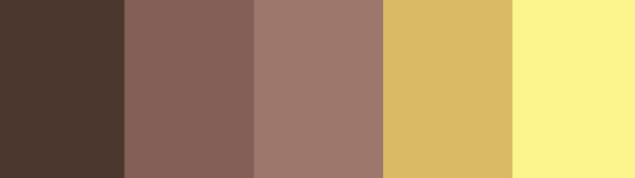

| Positiva | Negativa |
|---|---|
| É associada a coisas chiques, de luxo, coisas simples, naturais, organicas, a sabedoria e a firmeza. Varias pessoas tambem associam a cor marrom a coisas alimenticias por causa da sua associação com o chocolate e o cafe | Pode ser considerada monotoma e intediante dependendo da forma que for executada. |

